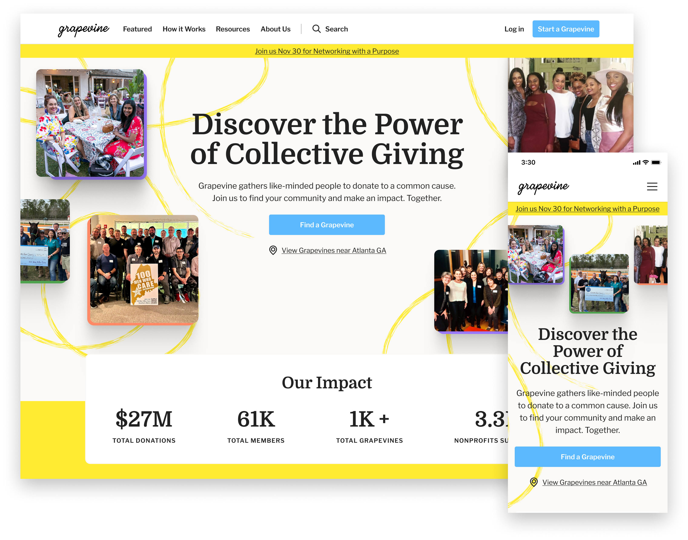
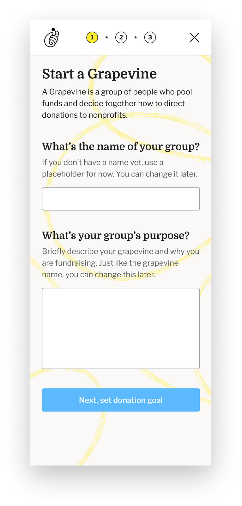
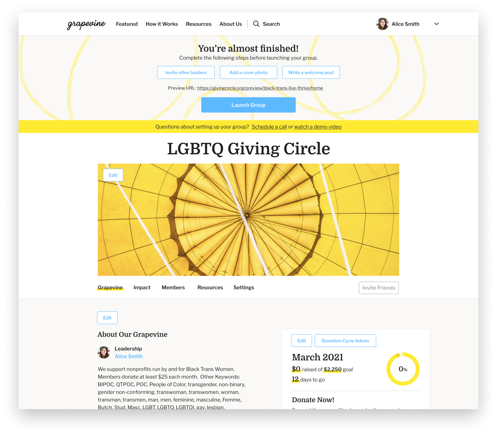
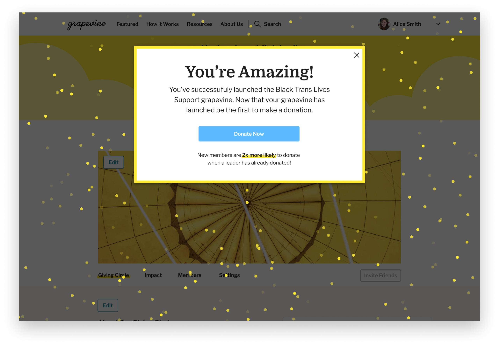
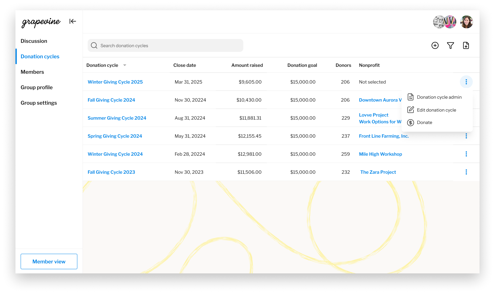

Grapevine
Designing the platform behind community giving
Throughout a six-year engagement, I led UX & Product Design for Grapevine, partnering closely with the CEO & CTO to design the platform behind community giving. My work transformed a collection of manual workflows into a connected product supporting leaders, members, donations, and nonprofit selection and giving. Alongside leading product design, I managed designers, supported ongoing UX research, and continued evolving the platform as it grew.
Oct 2020 – Mar 2025
Engagement
0
1
Product design
98,000
Members supported
$56 million
Total donations

I led the full design of Grapevine's platform, including a new homepage that communicated the value of community-based giving and the impact circles had created.
When I came on, Grapevine had a homepage and some basic forms but no real product. The core problem was onboarding: circle leaders were struggling to set up their groups, finalize their pages, and get members in the door. The existing approach relied on hands-on sales support to get leaders through setup, which wasn't going to scale.

The first of three onboarding stages is intentionally light, a few questions to frame the giving circle before leaders move on to customizing their group page
I designed a progressive onboarding flow that broke circle setup into three stages, each asking a little more of the leader as their confidence built. First, they defined their circle's purpose and donation goals. Second, they finalized their homepage and invited collaborators. Third, they made the first donation and invited members. By the time a leader launched their group, they understood the product well enough to bring others in.

The second stage opens up the giving circle page for customization. Remaining setup steps are surfaced at the top of the page, with a prominent Launch Group CTA to signal the finish line.
Launching their circle, the final stage, was designed as a moment worth celebrating, confetti, an encouraging message, and a clear next step. The goal was to send leaders into member recruitment feeling confident, not uncertain.

Launching the circle triggers a celebration moment with a clear next step: be the first to donate. Holding the donation until launch meant leaders never had an inactive circle they'd already given to.
The first version of the leader experience was the member view with edit and open CTAs layered on top, a WYSIWYG approach that made sense early on but couldn't scale as more leaders joined the platform. As usage grew, it became clear that leaders needed real management tools, not just the ability to edit their group page.

The leader dashboard brought together everything needed to run a giving circle, discussion posts, donation cycle management, a lightweight member CRM, and group settings in one place.